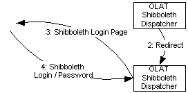

Overview description of jump-in handling for external links into OLAT system.
Introduction
Jump-in URL are used e.g. in automatic generated emails to add a direct link into OLAT system.
Two jump-in mechanisms exist :
- A new with full-text search introduced-BusinessControl based jump-in.
- Older deprecated with olatResourceable and initialViewIdentifier based jump-in.
Both mechanisms are used in OLAT, but for new implementation you should use the
BusinessControl based jump-in.
New BusinessControl based jump-in
Used in DropboxScoringViewController Email.
Example JumpIn URL :
http://olathost.org/olat/resource/go?resourceurl=[BusinessGroup=123456]
This URL opens in OLAT-system a group-tab with group-ID=123456.
Background : In the fulltext search each resource must have a unique resource-url to link information from search-index to
system-resource. E.g. a forum in a certain group must be adressed. To solve this a BusinessControl was introduced. The
resource-url represent the nessessary clicks to navigate to a resource.
Resource-url Format :
[RESOURCE_TYPE_1:RESOURCE_ID_1][RESOURCE_TYPE_2:RESOURCE_ID_2][...
Entry-point to resolve jump-in url : NewControllerFactory. The NewControllerFactory resolve the first entry in the resource-url.
Now this could be a business-group or a repository-entry. The appropriate element is loaded and a launch-controller will be created.
The next part of the resource-url will be resolved by the child element.

Login process with jump-in

Old jump-in
Used in notification emails of subscription.
Example JumpIn URL :
http://olathost.org/olat/auth/subs/go?sid=&lr=
Entry-point to resolve jump-in url : ControllerFactory